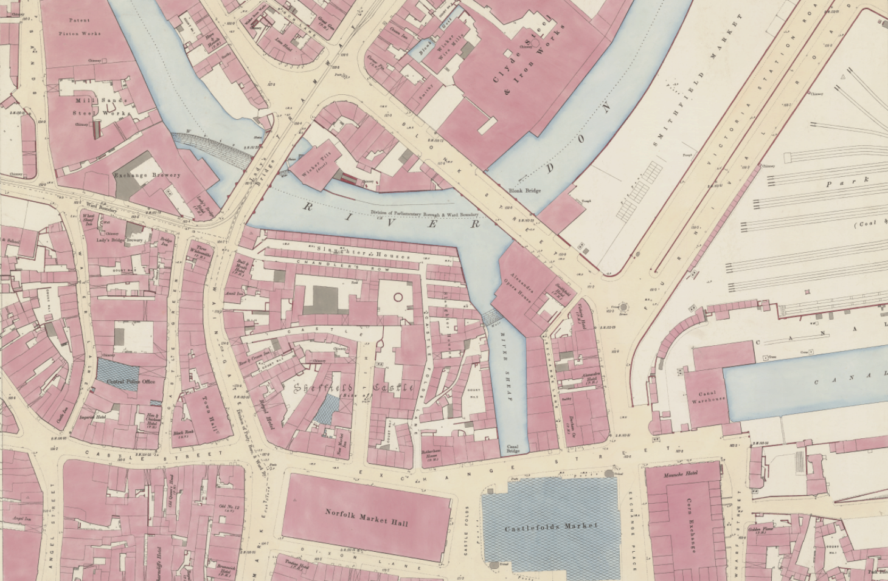

From a Cornish tin mine to Sheffield Testing Works
Things to do / thoughts
- This is one of these: “Map the edges of what I don’t know: list questions, uncertainties, contradictions.” Title can begin/end with “first thoughts / getting started / journal on…”
Bits and bobs
On our summer hols, we visited the Levant copper and tin mine in Cornwall. The superbly knowledgeable guide created a picture in my mind of the miners’ lives that got under my skin. The scale of the place at its peak - see the pic above of its cross section. When the miners had to use ladders, it would take an hour to climb down to their shift and ninety minutes to reach the surface again (they weren’t paid for that time). Falling off those ladders through sheer exhaustion at the end of a shift was not uncommon.
Verbal VTT rambles:
There’s a map from 1890 of the very centre of Sheffield where the testing works was originally based, partly on stilts over the river Don. It is surrounded on two sides by the Clyde and Mill Sands steel works. The opposite bank of the Don is lined with a huge number of slaughter houses, opposite that is the Alexandra Opera house (more music hall than opera). There are markets to the south and east, and the tendrils of rail and Canal connections reach right into all of it.

This small detail that a single piece of faulty metal was sent all the way to Sheffield from Cornwall for testing intrigues me. It was happening at a time in Sheffield where there was both a tension and a joining of practical and scientific happening between steel producers metals and the emerging colleges and universities.
The original articles of incorporation for Sheffield testing works are still available on the company’s house website for download if you want to go and look at them. In his recent history, it’s first been absorbed into a larger UK firm, moving off several times over this from the industrial Centre of Sheffield city into a more modern building further out in Rotherham. The majority stake in the UK firm is now owned by a Singapore sovereign wealth fund.
The deep history of this firm is in no way captured in the single SIC code on companies’s house: “74909 - Other professional, scientific and technical activities not elsewhere classified”. I’ve scraped data for all live firms in companies house - there’s a ton of incredible information hidden away in there, and using that you can make some fascinating maps of the UK’s economic landscape. But it’s important to remember how surface level this data is, what hidden history lies underneath. We can try and improve the accuracy of that data (for example, through tech analysis of firms websites to create more accurate industrial categories, as data city do). But that hidden history is still vital - not just a series of entertaining anecdotes, but an essential part of understanding why Sheffield’s economy is the shape it is, how deep the roots of its connections go, and how we can build on them now.
..
I first heard about Sheffield Testing Works through a random Cornish connection. In 1919, a 16 foot metal rod was sent from the Levant tin and copper mine to be tested in Sheffield. It had failed, causing one of the worst mining disasters in British history.
There are threads that run right from Sheffield and South Yorkshire’s past into the present day that will play a role in where we go next. There’s so much I don’t know, so much to learn.
Where did the original Sheffield testing Works get its DNA? What parts of that DNA still exist in the city? What did it come to be connected with?
To understand the economic ecosystem of a place the data is one bit of the elephant…
Planz / ramblinz
Some ways to approach this
This is a first bunch of thoughts. But one thing that would be good to do sometimes:
- Start with the data, follow breadcrumbs, see where that story takes me when I dig deeper.
So the Sheffield Testing Company story doesn’t follow that pattern, but then it doesn’t need to. That can be its own thing. I’d love to know what and who else they were testing for and how much has changed.
..
What kind of piece is this, and what do I want from it? I take the ‘following breadcrumbs’ point, but it might be nice to think about what focus I’d want and what the point is. I have ideas about trying to pitch pieces to the Shef Tribune. That would be something quite different to a free-form piece just exploring the sources.
It’s probably OK that I don’t know what ‘the story’ is yet. The tricky part is allowing myself to explore freely without nagging voices: “What are the opportunity costs?? Why are you wasting time??”
Snippets
That weak bracket was far from the only issue - workers had been telling management about the man engine’s problems for a long time.
Research
Levant mine
Amazing video (year old) - this time stamp is where the Man Engine explanation starts. It was installed in 1857. 1000 ft wooden rod. 137 times to get up or down. 30 mins versus 90 mins to climb (and risk falling from exhaustion). https://youtu.be/uH0W5AK4bwI?t=346
Huh. It was ancient tech - other mines using lifts (don’t think possible in that shaft?) Or two-pole man engines that doubled the speed.
Men had told management it wasn’t safe…
5 years since the bracket that broke was replaced.
The top 300 foot of the rod broke off and fell into the shaft.
Interesting: fault identified in the bracket led to it being labelled an ‘accident’, owners not liable. Despite other places having much safer systems. So no compensation to families of dead and injured.
..
From the original Levant mine man engine report.
https://nmrs.org.uk/mines-map/accidents-disasters/cornwall-devon/accident-at-levant-tin-mine-1919/
“The balanced load amounted to about 14 tons. When the shift of 150 men were on the rod their weight increased the unbalanced load to about 24 tons.”
150!!
“A full investigation took place and the caps which were made of faggotted iron were tested at the Sheffield Testing Works was found to be not uniform in quality owing to the method of manufacture. The inquest and inquiry was opened in the Levant Mining Company’s Offices an occupied two full days and conducted by Mr. Edward Boase, H.M. Coroner for the Western District of the County. All interested parties were represented and the jury brought in the verdict that the men died due to-
Accidental Death, the cause being the breaking of a strap plate due to fatigue of a defective part of the metal.”
..
“Transport of copper ore to Penzance until the 1840s was by mule train, each mule carrying about three hundredweight (150 kilos) in two sacks slung across a wooden pack saddle. In 1836 the Reverend Symonds, visiting Levant, described how “The ore………is sent over the Channel to Swansea for smelting, in sacks about as the thick part of one’s thigh.” So Levant’s first sale of 11 tons (a ton in this case being 21 cwt) would have required 77 mule loads to get it to Penzance. In fact the evidence indicates that the ore was taken to Penzance in sacks but shipped to Swansea loose.”
https://www.penwithlocalhistorygroup.co.uk/on-this-day/?id=93
Sheffield Testing Works
Here’s the Companies House entry for (now London registered) Element Materials Technology Sheffield. Note - list of older names includes the original Sheffield Testing Works, from 1903 when it was incorporated. Orig incorporation doc from 1903 here. From that:
The objects of the Company:
“To carry on the business of general testers of the strength and quality of iron and steel and other metals, iron founders, mechanical engineers, and manufacturers of implements and other machinery, tool makers, brass founders, metal workers, boiler makers, millwrights, machinists, iron and steel converters, smiths, wood workers, builders, painters, metallurgists, electrical engineers, water supply engineers, carriers and merchants, and to buy, sell, manufacture, repair, convert, let on hire, and deal in machinery, implements, rolling stock, and hardward of all kinds, and to carry on any other business (manufacturing or otherwise) which may seem to the Company capable of being conveniently carried on in connection with the above, or otherwise calculated, directly or indirectly, to enhance the value of any of the Company’s property and rights for the time being.”
..
https://www.gracesguide.co.uk/Sheffield_Testing_Works
“The Sheffield Testing Company (before they moved to Nursery Street) fronting Blonk Street occupied a corner of the Smithfield Market. (small building in front of Castle Grinding Wheel in the above photographs)” https://www.sheffieldhistory.co.uk/forums/topic/20026-smithfield-market/
Founded by Thomas Nash: “In 1880 he conceived the idea of establishing an independent testing and experimenting works in Sheffield. He took great pride in turning out accurate work, with the result that his business grew rapidly, and he found it advisable to add a chemical laboratory to his mechanical testing laboratory. In the course of his work he was frequently consulted regarding breakdowns of various kinds.” “Also a member of the Iron and Steel Institute.” https://www.gracesguide.co.uk/Thomas_Nash
His son Tom took over but only lived seven years longer than his father. https://www.gracesguide.co.uk/Thomas_Nash_(d.1910)
https://www.28dayslater.co.uk/threads/ferodo-house-sheffield-march-2018.112705/ Element used to be here (urban explorer)
Now at Magna Way - website has a little of the history. (Note accreditions.) https://www.element.com/locations/europe/sheffield-magna-way
Current Company Name Element, registered in London. Note previous names still recorded https://find-and-update.company-information.service.gov.uk/company/00076383
Note what it’s classified as versus how central to metals (though much broader now): “74909 - Other professional, scientific and technical activities not elsewhere classified”
Element now owns it; though they bought Exova. Now Element is owned by Temasek Holdings (minority stakef 2019, owns as of 2022). https://en.wikipedia.org/wiki/Element_Materials_Technology#:~:text=Element%20was%20acquired%20by%20Temasek,valued%20at%20circa%20$4bn.
..
Pick of Sheffield Testing and Experimentation Works, 1928. Featuring many cows.
..
“For instance, nothing could be much more artistic than the view from the bridge across the Don at the Sheffield Testing Works. One does not generally associate with Sheffield, in one’s mind, anything quite so charming in its effect as this striking picture.
“But if you enter one of the large manufactories for which Sheffield is famous, such as the Cyclops Works of Messrs. Charles Cammell and Co., or the Atlas Works of Messrs. John Brown and Co., or the Works of Messrs. Firth or Messrs. Vickers—names of firms which by no means exhaust the list—you will instantaneously receive a very different set of impressions.
“It is not too much to say that the keynote of these impressions is one of terror.”
https://decollected.net/novel/pearsons-main/sheffield/
..
Later… now subsumed into UK firm Element Materials (wikipedia), which has itself been conglomerated into a Singapore organisation, Temasek holdings. State owned multinational investment group. “While Temasek is largely considered as being a sovereign wealth fund (SWF), there are major differences as it invests mostly in equities, is the outright owner of many assets and companies.”
So it’s now state-owned by Singapore. Wow. Net value as of March 2025 close to 0.5 TRILLION dollars… https://www.temasek.com.sg/en/our-investments/our-portfolio
That portfolio site nicely shows what sectors it’s spread across. UK-wise, ‘major investments’ only one other firm, and that one only 17% stake vs 88% for Element (“EM Topco LTD”). (“EM Topco Limited is the holding company for Element Materials Technology Group Limited.”)
BITS
The democracy of it - default top down / Scottian etc.
But how the opposite of that isn’t nec democratisation - real time view of Trump destroying data for steering econ
Via muscletraining doc
Something around deepening understanding of actual sector connections and growth by linking qual and quant, plus working with LA. Include GRIT style goals of understanding wider connections. [We just don’t seem to have data on this stuff…] “Devol and networks offers opportunity to address the current lack of any direct knowledge of interlinkages and their role, and what role policy can make, if any… vs dominance of top down data of untested relevance.”
How exactly do firms cluster, in theory, and where in practice? How does that change over time – what forces bring them together, push them apart? What’s the relationship between productivity and economic mix? Is it enough to understand parts of the economic system, or is there something about the whole connective tissue – localised connections, international, how it all links into people’s lives where they live - that’s vital to get sight of? How pliable and steerable are any of these forces and what tools do we have to steer with?
CUTTINZ
Getting going
I don’t want this just to be going back over the same things (see bits below). What’s the actual plan for getting out of the office and digging into what’s going on out there in Sheffield and Yorkshire? On how people are making their pay packet, or not? Time taken to do that’s going to be interesting. But that’s what this needs to be about.
Just staring at the SY companies house numbers here: https://danolner.github.io/RegionalEconomicTools/miscdocs/SYLAs_CompaniesHouse2025_treemap.html
Two things: how accurate? What’s it missing? What can’t we see?
Blindspots/inaccuracies not just in the data, but in what it means for people’s working lives in those jobs I’m counting, who those people are, what the history of the firms is. [And issue of not seeing all firms - Bradford’s most famous space tech firm no longer registered there].
One rabbit hole it could be good to go down to find answers: what I can find out about a Sheffield firm’s role in assessing the metallurgy flaws in the Cornish man engine’s failure. Strong start to a story there (and why history’s so important).